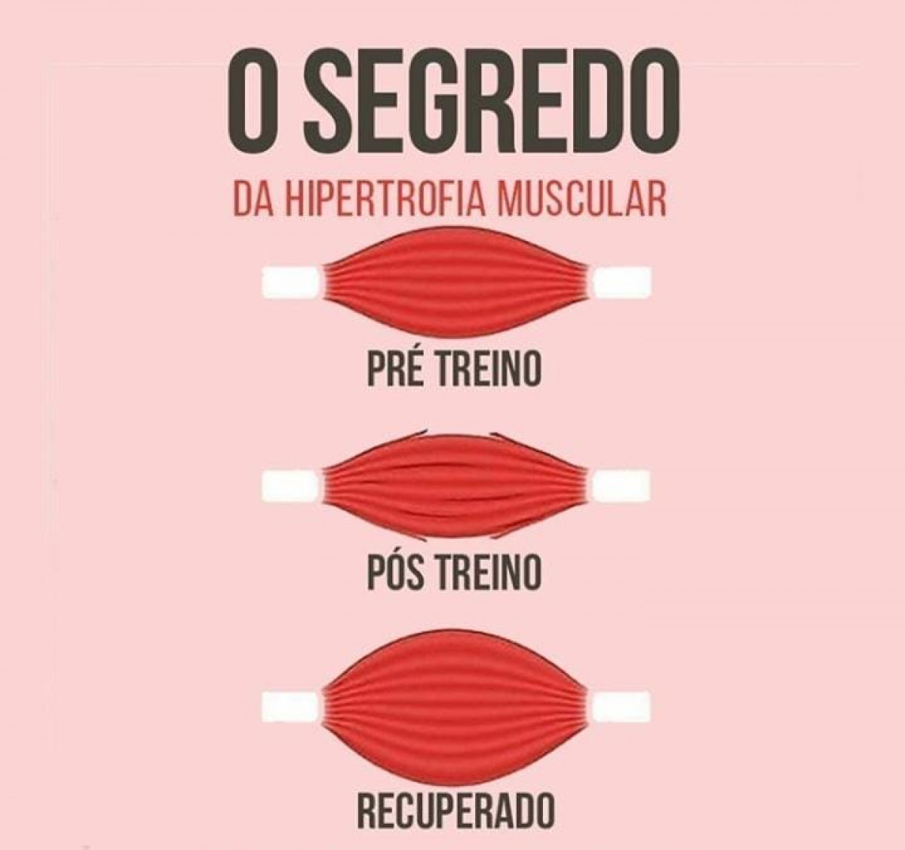

Os músculos do corpo humano são tecidos compostos por fibras musculares que se contraem e relaxam, produzindo força e movimento. A literatura estima que em nosso corpo exista cerca de 600 músculos, que podem ser lisos, estriados esqueléticos, e estriados cardíacos.
Hipertrofia
Chamamos de hipertrofia muscular quando os nossos músculos aumentam de tamanho e volume por conta de uma sobrecarga. Isto é, a hipertrofia nada mais é do que uma resposta fisiológica do nosso organismo ao quanto exigimos dele no momento. É interessante lembrar que não importa se são pesos extras ou o peso do corpo, os estímulos trarão com eficiência a hipertrofia, em alguns casos mais do que em outros.